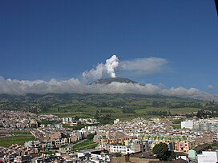

Galeras

Description
(Urcunina among the 16th-century indigenous people) is an Andean stratovolcano in the Colombian department of Nariño, near the departmental capital Pasto. Its summit rises 4,276 metres (14,029 ft) above sea level. It has erupted frequently since the Spanish conquest, with its first historical eruption being recorded on December 7, 1580. A 1993 eruption killed nine people, including six scientists who had descended into the volcano's crater to sample gases and take gravity measurements in an attempt to be able to predict future eruptions. It is currently the most active volcano in Colombia.
History
Galeras has been an active volcano for at least a million years, with andesite as the dominant product. Two major caldera-forming eruptions have occurred, the first about 560,000 years ago in an eruption which expelled about 15 cubic kilometres (3.6 cu mi) of material. The second some time between 40,000 and 150,000 years ago, in a smaller but still sizable eruption of 2 cubic kilometres (0.48 cu mi) of material. Subsequently, part of the caldera wall has collapsed, possibly due to instabilities caused by hydrothermal activity, and later eruptions have built up a smaller cone inside the now horseshoe-shaped caldera.
In light of its violent eruptive history and proximity to the 450,000 people of Pasto, Galeras was designated a Decade Volcano in 1991, identifying it as a target for detailed study as part of the United Nations' International Decade for Natural Disaster Reduction.